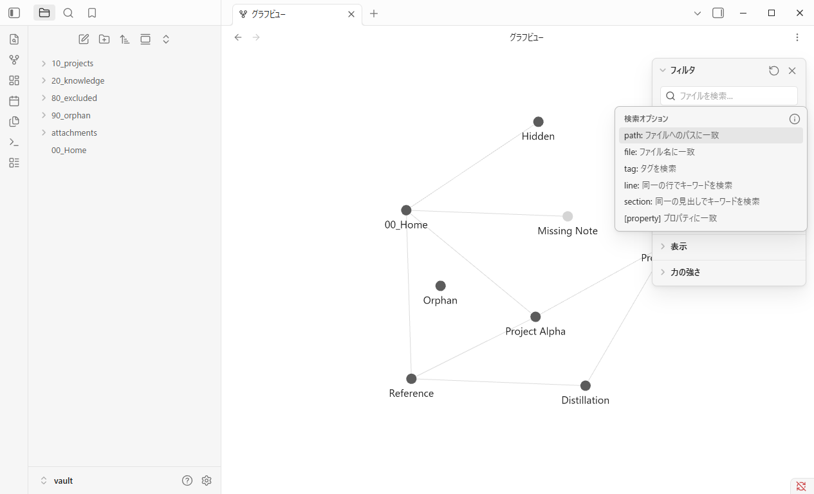
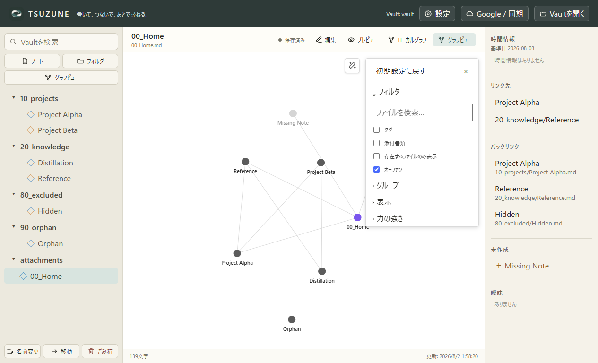
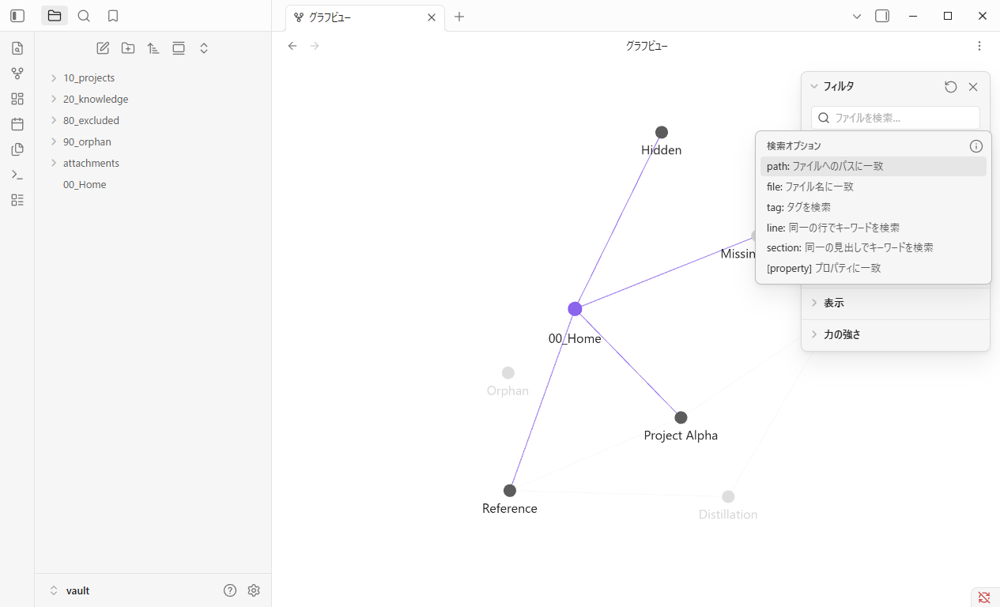
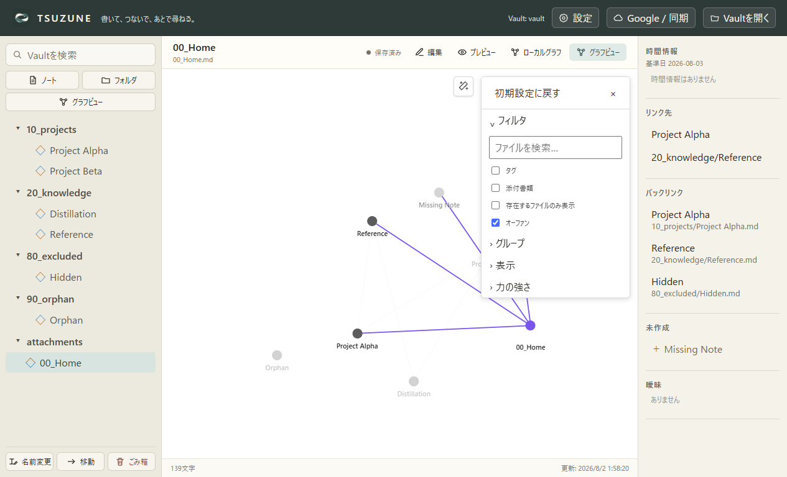
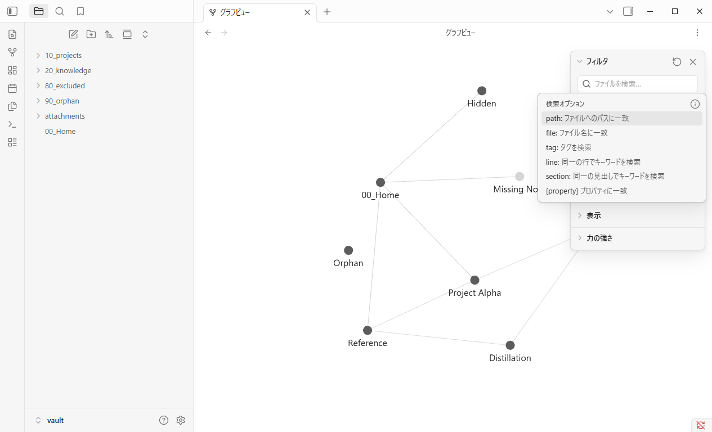
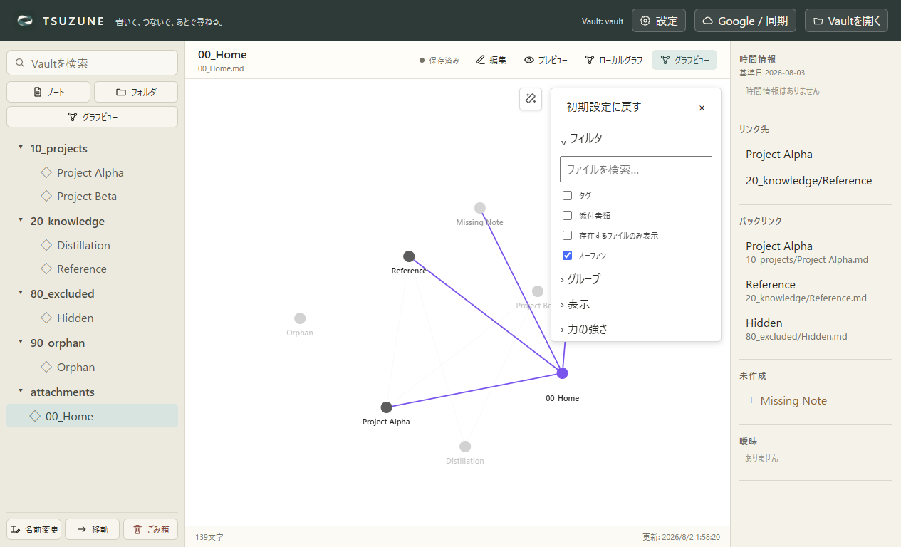
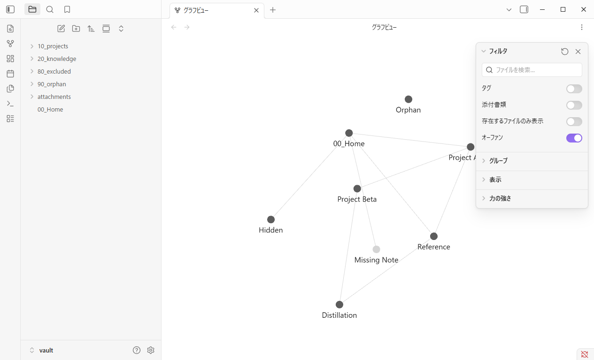
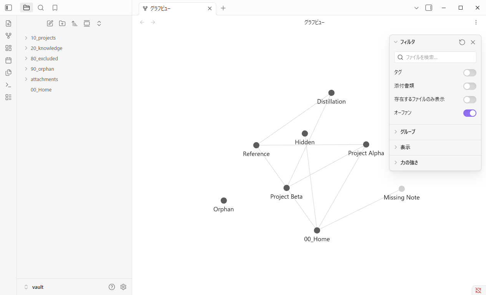

GP0-3b-d · Node drag lifecycle
つかんでいる間だけ固定し、離せば物理配置へ戻る。
固定Obsidian Desktop 1.13.4とTSUZUNEを、同じ8-node fixture・1265×768・DPR 1・ライトテーマで比較しました。絶対座標ではなく、ノード固定と永続化の公開契約を判定しています。
5 / 5 lifecycle checks matched
+96, +64制御入力したCSS pixel移動
Releasepointerup後にsimulationへ復帰
Not persisted座標・pinを保存しない
契約比較
Obsidianは再表示時に配置を再シードし、TSUZUNEは決定的baselineへ戻ります。この絶対座標差は、node pin／座標保存契約の不一致として扱いません。
| Check | Obsidian | TSUZUNE | Status |
|---|---|---|---|
| ノードを +96, +64 CSS px 移動 | x: 96.005, y: 63.945 | x: 96.000, y: 64.000 | 一致 |
| 押下中だけポインター位置へ固定 | 固定 | 固定 | 一致 |
| pointerup後にForce simulationへ復帰 | 復帰 | 復帰 | 一致 |
| Graph再表示後のnode pin／座標保存 | 保存しない | 保存しない | 一致 |
| アプリ再起動後のnode pin／座標保存 | 保存しない | 保存しない | 一致 |
画面証拠
Baseline


During node drag


After node release


After Graph reopen


After app restart


判断
TSUZUNE本体の修正は不要です。 両製品ともドラッグ中だけ一時固定し、pointerup後はForce simulationへ戻り、座標とpinを永続化しません。
入力は両製品ともCDP系の隔離オフスクリーン制御です。物理マウス、実OSポインター、完全に同一な減衰曲線、再シード座標、Local Graph、touch／penは今回確定していません。